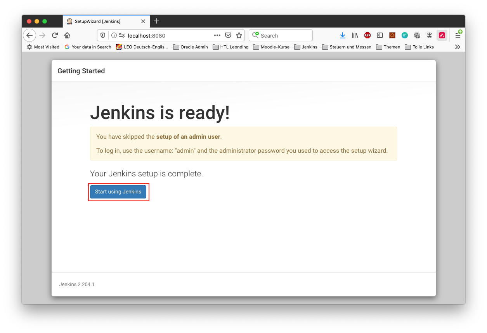
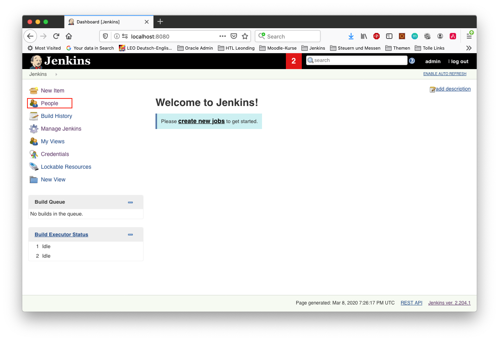
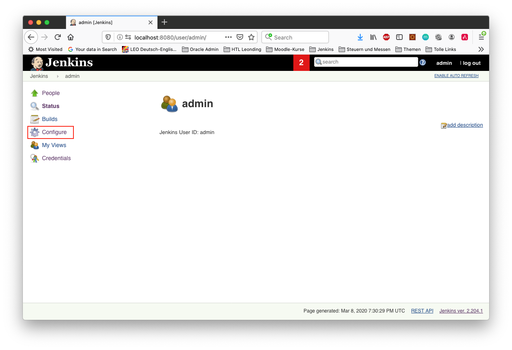

1. Was ist Docker?
-
Eine Technologie, um eine Application und alle ihre Abhängigkeiten in einen einzelnen, leicht zu transportierenden Container zu packen.
-
Wird eine Applikation in einen Docker-Container gepackt, so ist sichergestellt, dass die Laufzeitumgebung unverändert bleibt, auch wenn der container auf einem anderen Hostsystem läuft.


4. Grundprinzip
-
Dockerfile: Kochrezept zum Erstellen des Images
-
Image: Immutable Image
-
Container: Ein gestartetes Image (mutable)
5. Ist Docker installiert?
docker version
% docker version Client: Docker Engine - Community Version: 19.03.5 API version: 1.40 Go version: go1.12.12 Git commit: 633a0ea Built: Wed Nov 13 07:22:34 2019 OS/Arch: darwin/amd64 Experimental: false Server: Docker Engine - Community Engine: Version: 19.03.5 API version: 1.40 (minimum version 1.12) Go version: go1.12.12 Git commit: 633a0ea Built: Wed Nov 13 07:29:19 2019 OS/Arch: linux/amd64 Experimental: true containerd: Version: v1.2.10 GitCommit: b34a5c8af56e510852c35414db4c1f4fa6172339 runc: Version: 1.0.0-rc8+dev GitCommit: 3e425f80a8c931f88e6d94a8c831b9d5aa481657 docker-init: Version: 0.18.0 GitCommit: fec3683
sudo usermod -a -G docker jenkins
6. Docker Networks
-
Konfiguriert die Verbindung zwischen Container und zum Internet
-
Container können ports freigeben und so im Internet verfügbar machen
-
Man verwendet die Docker CLI
-
Network Drivers
-
Bridge: Virtuelles Netzwerk, um mehrere Container miteinander zu verbinden
-
Host: Entfernt die NEtzwerk-Isolation zwischen Host und Containern. Die Container benutzen das Netzwerk des Hosts direkt
-
Overlay: Verbindet Container die auf unterschiedlichen Docker-Hosts laufen
-
Macvlan: Weist eine MAC-Adresse einem Container zu. Für low-level Netzwerkanforderungen
-
None: Deaktiviert das Netzwerk zwischen den Containern
-
7. Bind Mounts and Volumes
-
Bind Mounts ein File oder Verzeichnis des Containers wird in einem File oder Verzeichnis zugänglich gemacht
-
docker run -v ${PWD}/directory-on-host:/directory-in-container
-
-
Named Volumes existieren am Host. Sie werden durch die Docker CLI manipuliert.
-
docker volume create my-volume
-
docker run -v my-volume:/directory-in-container
-
-
Volumes verfügen über mehr Features wie Cloud Storage Backends
8. Docker Registries
-
a remote repository for storing Docker images
-
public or private
-
self-hosted or third-party service
-
ie Docker Hub, Quay.io
9. Erste Beispiele mit Docker
9.3. Ubuntu mit einem externen Volume
docker run -it --name syp_ubuntu -v ${PWD}/my_opt:/opt ubuntu:18.04 /bin/bash
9.6. nginx - Step 2
docker run --rm -p 8081:80 --name nginx nginx
docker exec -it nginx /bin/sh
10. Unterschied zum Arbeiten ohne Docker
-
Ohne Docker werden auf einer Maschine mehrere Softwareprodukte installiert
-
Bei Verwendung von Docker wird für jedes Softwareprodukt ein eigener Docker-Container erstellt
11. Starten einer Jenkins-Instanz in Docker
docker run -it \
--rm \
-v /var/run/docker.sock:/var/run/docker.sock \
-v ${PWD}/jenkins-data:/var/jenkins_home \
-p 8080:8080 \
--name local-jenkins \
getintodevops/jenkins-withdocker:lts-docker19.03.5







12. Dockerfile
FROM jenkins/jenkins:lts
MAINTAINER miiro@getintodevops.com
USER root
# Install the latest Docker CE binaries
RUN apt-get update && \
apt-get -y install apt-transport-https \
ca-certificates \
curl \
gnupg2 \
software-properties-common && \
curl -fsSL https://download.docker.com/linux/$(. /etc/os-release; echo "$ID")/gpg > /tmp/dkey; apt-key add /tmp/dkey && \
add-apt-repository \
"deb [arch=amd64] https://download.docker.com/linux/$(. /etc/os-release; echo "$ID") \
$(lsb_release -cs) \
stable" && \
apt-get update && \
apt-get -y install docker-ce13. Does Docker work
node {
docker.image('alpine:latest').inside {
sh 'echo Hello World!'
}
}
pipeline {
agent any
stages {
stage('Hello') {
steps {
echo 'Hello World'
}
}
}
}
14. Assignment
This assignment is complete when you have configured a Jenkins job that triggers automatically every 10 minutes, and prints the text "Hello World" in the console output.
14.1. Solution
There are many possible solutions for this task:
-
Create pipeline job
-
Build Triggers - Build Periodically - Schedule: H/10 * * * *
Jenkins uses a cron expression, and the different fields are:
-
MINUTES Minutes in one hour (0-59)
-
HOURS Hours in one day (0-23)
-
DAYMONTH Day in a month (1-31)
-
MONTH Month in a year (1-12)
-
DAYWEEK Day of the week (0-7) where 0 and 7 are sunday
The H option enables Jenkins to pick a random minute for running the job, avoiding load spikes.
-
14.2. Pipeline script
example hello world from jenkins
pipeline {
agent any
stages {
stage('Hello') {
steps {
echo 'Hello World'
}
}
}
}
14.3. Pipeline script
with docker
node {
docker.image('alpine:latest').inside {
sh 'echo Hello World!'
}
}

15. Build a pipeline with Jenkins
15.1. Jenkins
-
Automation Server mostly used for CI and CD pipelines
-
Pipelines as code
-
Pipelines werden mittels Jenkinsfiles deklariert
-
Java
15.2. Komponenten
-
Job oder project
-
Master hosted das Jenkins user-interface
-
Agent kann auf unterschiedlichen Server laufen. Sind optional.
-
Executor ist ein Slot in dem ein Job läuft. Sowohl Masters als auch Agents können Executors haben.
15.4. Jenkinsfile
-
Text file definert einen Jenkins Pipeline Job
-
Deklarativ (einfach) oder gescripted (mehr Möglichkeiten, Groovy)
-
Stages für unterschiedliche Teile der Pipeline: build, test, deploy, …
-
werden im Git-Repository gespeichert
15.6. Steps
-
Clonen des Vorlageprojekts
-
Kopieren des Templates, um ein eigenes Applikations-Repository zu erstellen
-
Erstellen eines GitHub-Repositories und pushen des Codes

16. What is a Dockerfile for?
-
Define the source or base image
-
Define the list of actions to take on the base image
-
Tell Docker how to run the image
16.2. Define the list of actions
Copy all files into Docker-container
FROM node:13.8.0
COPY . .| Use COPY instead of ADD unless you specifically know you need to use ADD |
17. Jenkinsfile Basics

17.1. Create a Jenkinsfile
node {
}
node means that all commands within run in an executor reserved for this job
17.2. def app
node {
def app
}Declares a variable called app. This variable will point to the docker image, we build later.
17.3. stage
node {
def app
stage('Clone repository') {
}
}The name will only be used for logfiles and visualization of the job
17.4. The Complete Jenkins-File
node {
def app
stage('Clone repository') {
checkout scm
}
stage('Build image') {
app = docker.build('htlleonding/example-app')
}
stage('Push image') {
docker.withRegistry('https://registry.hub.docker.com',
'docker-hub-credentials') {
app.push('latest')
}
}
}| command | purpose |
|---|---|
checkout scm |
scm … source code management. Der Sourcecode wird aus dem git-repo ausgecheckt. |
18. Create a Jenkins Job
In Jenkins
-
New Item
-
Item name: example-app
-
Item type: pipeline
18.2. Pipeline
-
Definition: Pipeline script from SCM
-
SCM: Git
-
Repositories
-
Repository URL: https://github.com/htl-leonding/example-app.git
-
Credentials: - none -
-
-
-
18.3. Add Credentials
-
Docker Home Page
-
Credentials
-
Stores scoped to Jenkins: (global)
-
Add Credentials
-
Kind: Username with password
-
Scope: Global
-
Username: xxxx
-
Password: yyyy
-
ID: docker-hub-credentials
-
Description: Credentials for accessing docker hub.
-
-
-
-
18.4. Copy a test-file
cp ../bestpractices-docker-jenkins/building-docker-images/test.js.example ./test.js18.5. Test-file
var assert = require('assert')
function test() {
assert.equal(2 + 2, 4);
}
if (module == require.main) require('test').run(test);18.6. Add stage to Jenkinsfile
Add stage('Test') between stage('Build image') and stage('Push image')
stage('Test') {
app.inside {
sh 'npm test'
}
}